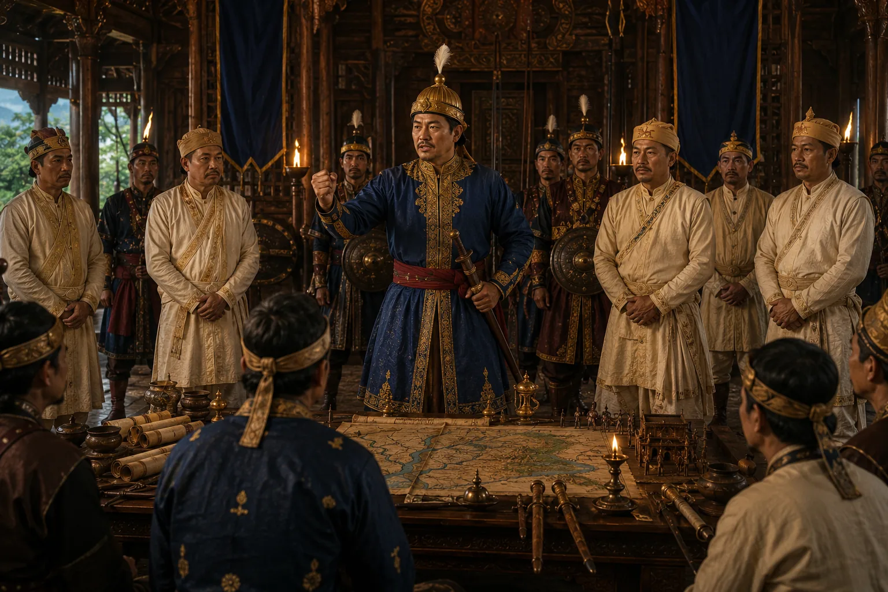

Chakradhwaj Singha's Oath of Resistance
1667 · Against the Mughal Empire

Receiving a patronizing Mughal royal robe (khilat) from Delhi, King Chakradhwaj angrily throws it down, proclaiming: 'Death is preferable to a state of subordination to the Bengas!'
Sources have not yet been catalogued for this record.